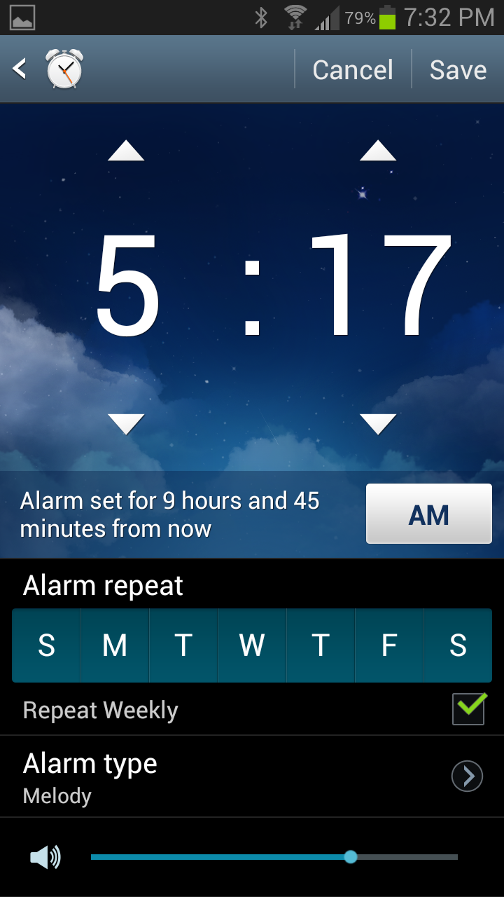
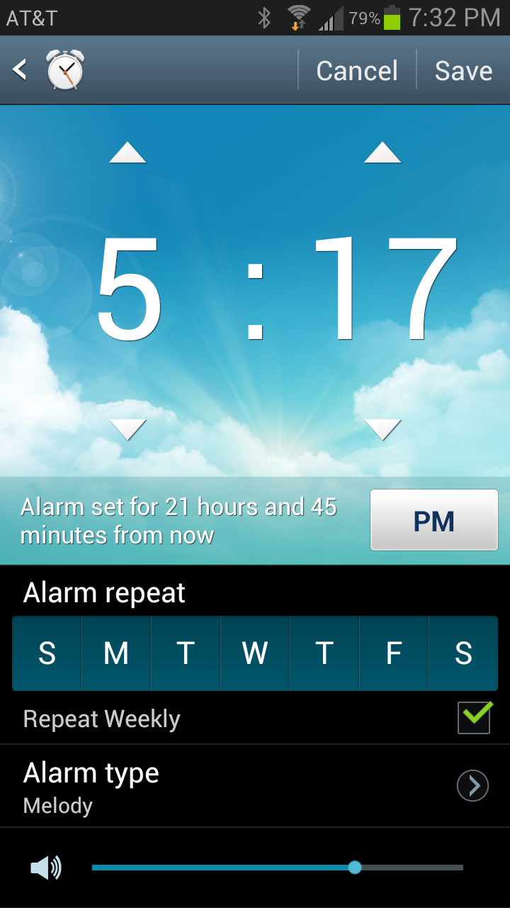
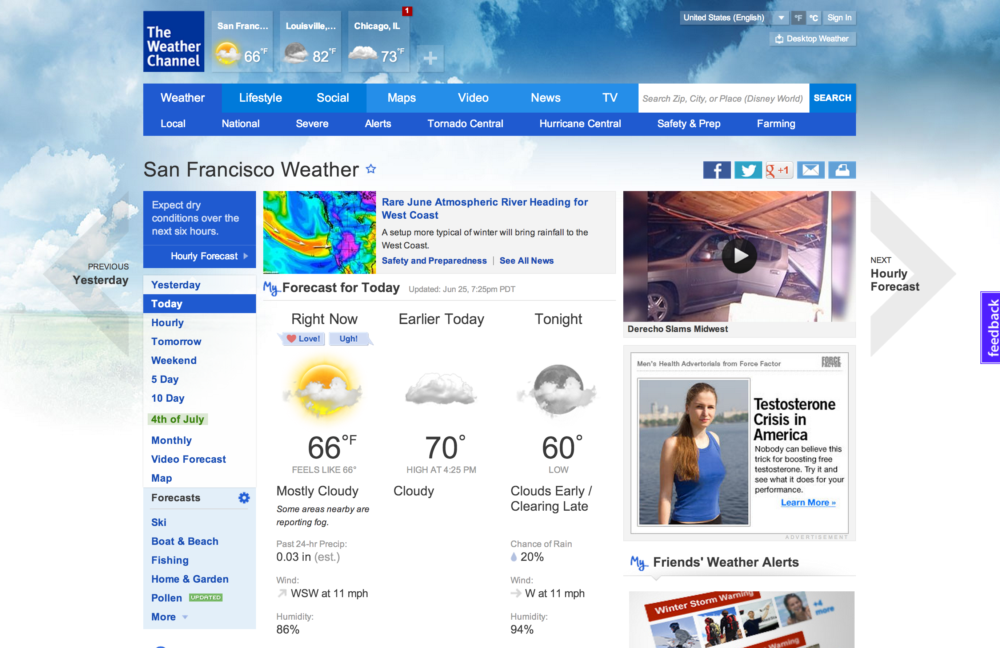
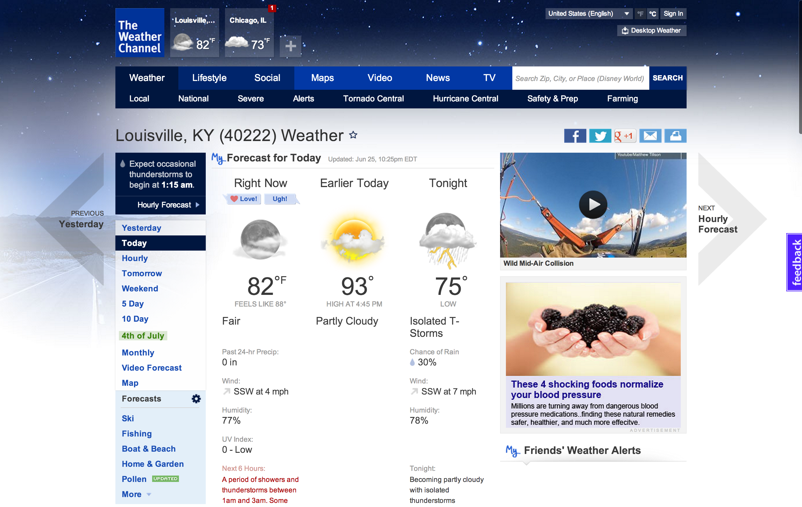

Contextual Background Images and Why They are Awesome
A contextual background image changes depending on a certain state. These background images can be very useful by providing information in a quick and fun way to the user.
In my daily routine I see two cases of contextual background images. The first is the alarm clock on my android phone (Samsung GS3). After 6 AM, a sunny background displays, telling the user that they have the alarm set for a time when the sun is out (typically). After 6 PM, a night background displays.
 Although a user can read the time they are setting on the clock, the image reinforces that they are setting the time during the day or night. Why is this important to me? Consider the following scenario: It's 6:30 AM. The alarm rings. In my sleepy state, I decide it's a good idea to have 15 more minutes. While fumbling with my phone, I select PM on accident. Now the alarm does not ring, and I'm late to start my day. With the contextual background image, I would see the image change to night, and I would be less likely to make this mistake.
When creating personas and designing an interface, it's important to remember the scenario someone is experiencing. For example, at 2 PM, I would most likely have no issue setting the alarm. However, at 2 AM, I would be in a state of sleepiness, and I might make the AM/PM mistake.
The second contextual background I often see everyday is at weather.com. The background image reflects the current weather. I've seen very many backgrounds, such as sunny, cloudy, raining, thunder storming, and snowing. This is useful because it can immediately inform a user of the current weather and aesthetically improves the overall experience.
 Contextual background images should not be the primary source of the information. In both of these scenarios, the background image could be removed, and the user would still be able to accomplish the task. These images should also follow the same conventions as a static background image, such as not distracting the user from the main content. When used appropriately, they increase the overall experience, and I hope to see them more often.